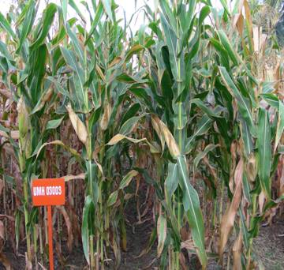
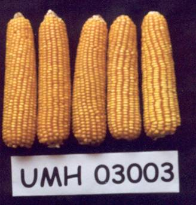
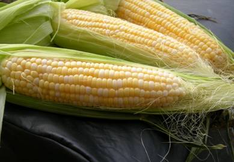

Morphological Description

Maize - HYBRID COH (M) |
 |
 |
| PARTICULARS |
CO 1 |
COH(M) 4 |
| Parentage |
Unit Selection from Indonesian popu lation Suwan 1 |
Unit Selection from Indonesian popu lation Suwan 1 |
(UMI 90 x xUMI 285) x UMI 112 |
| Duration (days) |
105 - 110 |
94 (90 – 95 days) |
| Area of Adoption |
Coimbatore, Erode, Tirunelveli, Tanjore and Pudukottai |
Coimbatore, Dindugul, Erode, Salem, Virudhunagar, Perambalur, Tuticorin, Madurai and Theni districts |
| Rainfed/Irrigated |
Both |
Both |
| Grain yield (kg/ha) |
| Irrigated |
5200 |
5694 |
| Rainfed |
3300 |
4521 |
| Special features |
Resistant to downy mildew Orange flint grains |
Shorter duration, suitable for rainfed areas Moderate resistance to downy mildew and stemborer |
| Sheath colour |
Green |
Green |
| Node colour |
Green |
Green |
| Mid rib |
White |
White |
| Cob size |
Big |
Big |
| Husk coverage |
Full |
Full |
| Grain colour |
Deep orange |
Yellow |
| Nature of kernels |
Flint |
Flint |
| Particulars |
TNAU maize hybrid Co 6 |
Baby corn Co(Bc) 1 |
| Parentage |
(UMI 1200 x UMI 1230) |
Composite involving UMI 836 and UMI 836-1-2 |
| Duration (days) |
110 days |
55 – 65 (fresh cobs harvest) |
| Area of Adoption |
All maize growing areas |
All maize growing areas |
| Rainfed/Irrigated |
Both |
Both |
Grain yield (kg/ha) |
| Irrigated |
7400 |
6.7 tonnes of tender cobs & 32.3 tonnes of green fodder / ha |
| Rainfed |
5000 |
3 tonnes of tender cobs per ha. |
| Special features |
High starch (76.30 %), high protein (11.25%) and high beta- carotein (0.48 mg/100g) with moderate level of fat (4.65 %) and crude fibre (1.25%). High shelling (81%) with high test weight (400 g /1000 seeds). Multiple disease resistance to Sorghum downy mildew, Maydisleaf blight, Turcicum leaf blight, Post flowering stock rot and Banded leaf and sheath blight. Moderately resistant to stem borer. Hybrid seed production is much easier since male and female parents can be sown simultaneously for flowering synchronization. |
2 to 3 cobs / plant, possessing delightful sweet taste and flavour Suitable for inland and export market Green fodder has good forage value. |
| Stem colour |
Green |
Greenish pink |
| Leaf: Anthocyanin colouration of sheath |
Present |
Nil |
| Ear: Anthocyanin colouration of silk |
Present |
Present |
| Cob size |
Big |
Small |
| Ear: Husk coverage |
Full |
Full |
| Colour of top of Grains |
Orange Yellow |
Yellow |
| Type of kernels |
Semi dent |
Dent |
|